Com tecnologia molecular proprietária focada em oncologia para apoiar médicos e pacientes.
impactados
nossa tecnologia
atendidos
pelo mundo
dedicado
Descobriu
um nódulo
indeterminado
de tireoide?
Quando exames convencionais não fornecem todas as respostas, nossas soluções acrescentam uma nova camada de informação personalizada para trazer mais clareza.
Entenda como funciona oteste molecular mir-THYpe
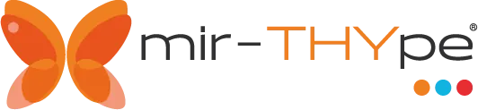
Nem toda decisão é igual.
Porque nenhum paciente
é igual.
Conheça a Onkos!
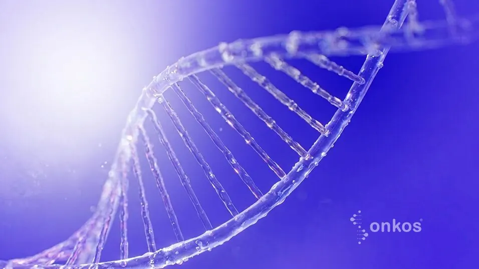
O resultado me trouxe mais segurança para decidir pelo acompanhamento, evitando uma cirurgia que não era necessária naquele momento
Paciente Onkos★★★★★Ter mais informação me ajudou a entender minhas opções e seguir o tratamento com tranquilidade.
Paciente Onkos★★★★★Atendimento excelente, sempre de imediato quando surgiam as dúvidas. Recomendaria com certeza.
Comentário do Cliente★★★★★Me ajudou a tomar uma importante decisão e tive suporte de qualidade da equipe de vcs.
Comentário do Cliente★★★★★Seu médico identificou
um nódulo de tireoide?
Nem todo nódulo significa câncer
Os nódulos de tireoide são muito comuns. Estima-se que 6 em cada 10 pessoas terão algum nódulo ao longo da vida.
A maioria deles é benigna.
Como funciona sua jornada:
Descoberta do nóduloUltrassom identifica alterações na tireoide.
Avaliação médicaSeu médico solicita exames complementares.
Punção (PAAF)Amostras são coletadas para análise.
Análise molecularO mir-THYpe amplia as informações disponíveis, e seu médico define a conduta mais adequada para o seu caso.
Decisão clínicaSeu médico define a conduta mais adequada para o seu caso. Acompanhamento ou cirurgia ou tratamento.
Quando a punção deixa dúvidas, entenda como o teste molecular pode ajudar a escolher a conduta mais adequada para o seu caso.
foi indeterminadoBethesda III ou IV
A análise molecular reclassifica seu nódulo em maligno e benigno, e seu médico tem mais informações para decidir entre acompanhamento ou cirurgia.
Conheça o mir-THYpe fullde malignidadeBethesda V ou VI
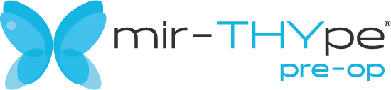
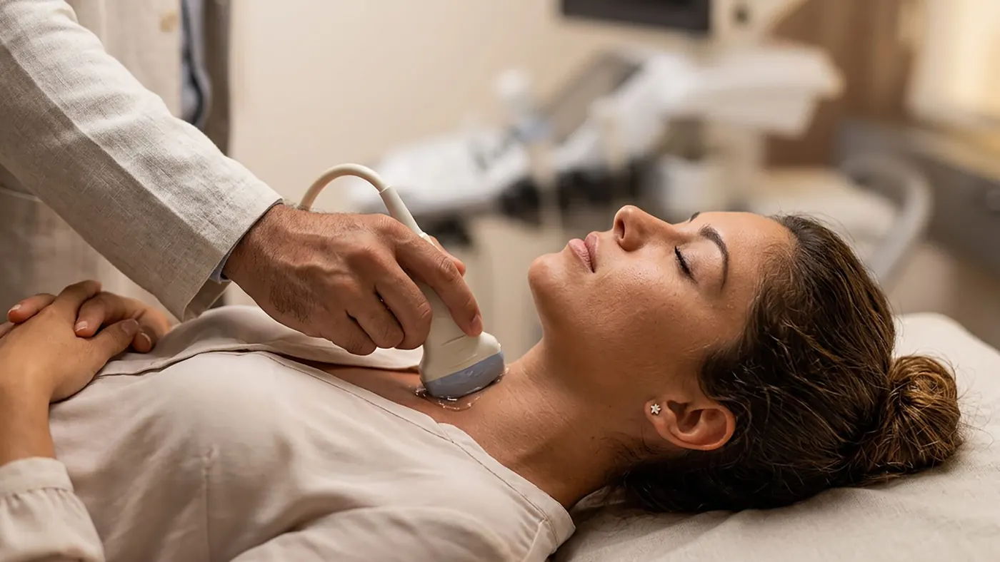
A análise molecular traz informações adicionais sobre o potencial de agressividade do nódulo para avaliação da extensão e urgência cirúrgica.
Conheça o mir-THYpe pre-optireoide avançado
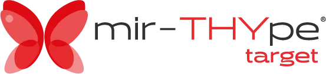
Para pessoas com tumores avançados e/ou metastáticos de Tireoide, a análise molecular ajuda a identificar alterações genéticas importantes para definição terapêutica.
Conheça o mir-THYpe targetComo solicitar seu exame:
1.Solicite seu
pedido médico
Peça ao seu médico que preencha, assine e carimbe o Pedido Médico.
3. Logística por
nossa conta
A logística de retirada da amostra é responsabilidade da Onkos
4. Receba
o resultado
Online, você e seu médico têm acesso ao seu resultado em nosso portal de laudos
Cerca de 30%
dos casos de nódulo
de tireoide têm resultado
indeterminado, e acabam em cirurgia.
até 77%
dos nódulos de tireoide indeterminados
(Bethesda III ou IV), submetidos à cirurgia
são reclassificados como benignosa
pós a cirurgia¹
Ferramenta de suporte à decisão clínica
Mais clareza em
nódulos de tireoide
+2500médicos utilizam
nossa tecnologia
Baixe aqui o formulário de pedido médico
Nódulos indeterminados
(Bethesda III ou IV) na PAAF?
Saiba MaisSuporte no
planejamento
e extensão cirúrgica
Saiba MaisPainel Tumoral para
Seleção
de Drogas-Alvo em
Câncer
de Tireoide Avançado
Saiba MaisRobustas evidências científicas
Diretrizes Nacionais e Internacionais recomendam o uso de testes moleculares
- American Thyroid Association [2]
- NCCN (National Comprehensive Cancer Network) [3]
- Consenso Brasileiro [4]
Atualizações
científicas
Receba publicações, casos clínicos, aulas e novidades em diagnóstico molecular
Não requer nova punção
Utiliza a mesma lâmina da PAAF já coletada, evitando desconforto e trazendo conveniência ao seu paciente
Assessoria ao médico
Equipe científica e operacional especializada dedicada ao suporte durante toda a jornada
OnkosGo
Retiramos a amostra do seu paciente onde ela estiver armazenada, em qualquer lugar do Brasil e do mundo
Informações Técnicas
Código TUSS
4.03.14.60.0 — Teste molecular para nódulos de tireoide por perfil de microRNA (miRNA), por nódulo.
Patente
Patente n° BR 102018003587-8
Responsável Técnico
Dr. Marcos Tadeu dos Santos – Biólogo Molecular - CRBio n° 113094/01-D. Membro da Latin America Thyroid Society (LATS) e do Departamento de Tireoide da Sociedade Brasileira de Endocrinologia e Metabolismo (SBEM).
Referências
- Bongiovanni M, et al. 2012 Acta Cytologica
- Haugen BR, et al. 2016 Thyroid.
- NCCN Thyroid Carcinoma Clinical Practice Guidelines, v1.2017.
- Rosário PW, et al, 2015 Thyroid nodule and differentiated thyroid cancer: update on the Brazilian consensus. Arq Bras Endocrinol Metab 57(4):240-2642
- Santos MT et al., 2018 Molecular Classification of Thyroid Nodules with Indeterminate Cytology: Development and Validation of a Highly Sensitive and Specific New miRNA-Based Classifier Test Using Fine-Needle Aspiration Smear Slides Thyroid 28(12) 1618-1626
- Santos, M. T., et al. (2022). Clinical decision support analysis of a microRNA-based thyroid molecular classifier: A real-world, prospective and multicentre validation study. The Lancet Discovery Science (eBioMedicine), 82, 104137.
Descobriu um nódulo
indeterminado de tireoide?
Entenda o que fazer com apoio do teste molecular
Existem diferentes opções de cuidado nos casos de nódulo Bethesda III ou IV.
As principais são:*
padrão:Cirurgia Teste
molecular*negativo:
acompanhamentoPositivo:
cirurgia
*Haugen BR, et al., 2016 Thyroid 26: 1–133
O mais importante é ter informações precisas para definir a opção mais segura para você.
Nódulos Indeterminados
Cerca de 30% dos nódulos de tireoide avaliados por punção (PAAF) têm resultado indeterminado*, e muitos acabam em cirurgia.
Diagnóstico de alta precisão
O teste molecular mir-THYpe full analisa características genéticas do seu nódulo para dar mais clareza ao seu médico, e um cuidado personalizado para você.
Decisão clínica
Nem sempre a melhor escolha é tirar a tireoide. Não operar também é uma forma de tratamento, quando bem assistida.
Não requer nova punção
Utilizamos a mesma amostra (PAAF) já coletada.
Personalize sua decisão
de extensão cirúrgica
Para nódulos de Tireoide com Indicação Cirúrgica (Bethesda V ou VI)
Análise de marcadores prognósticos que indicam o potencial de agressividade do nódulo, auxiliando no planejamento da extensão e urgência cirúrgica.
Existem diferentes opções de cuidado nos casos de nódulo Bethesda III ou IV. As principais são:*
Os marcadores prognósticos podem prever comportamentos mais ou menos agressivos, ajudando a personalizara extensão da cirurgia.
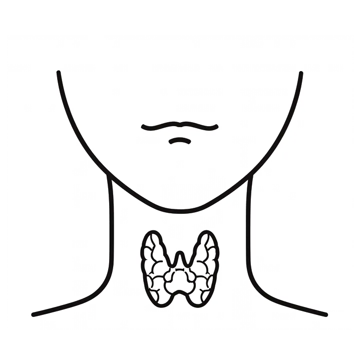
Carcinoma medular(microRNA e mutações RET)
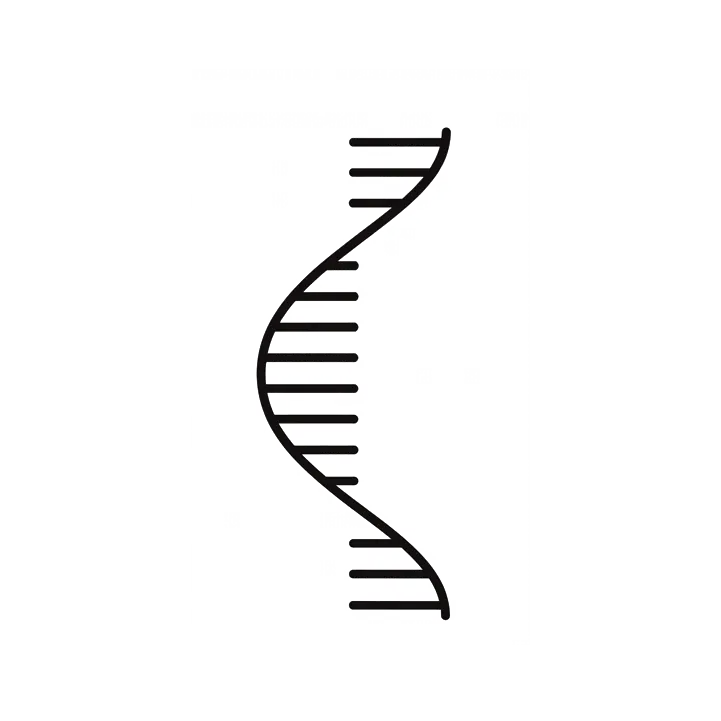
miR-146b(expressão)
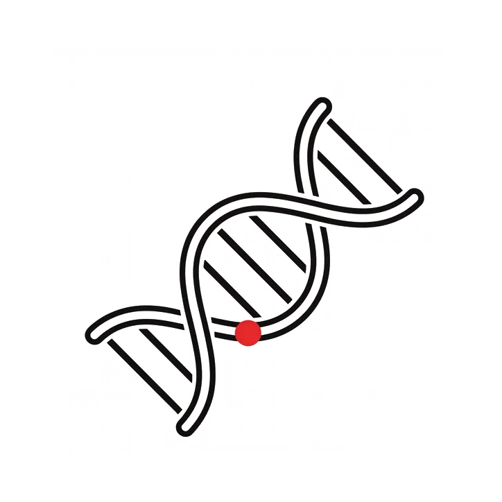
BRAF(V600E)
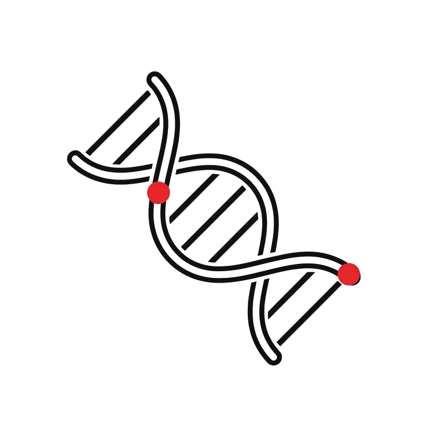
p. TERT(C250T, C228T)
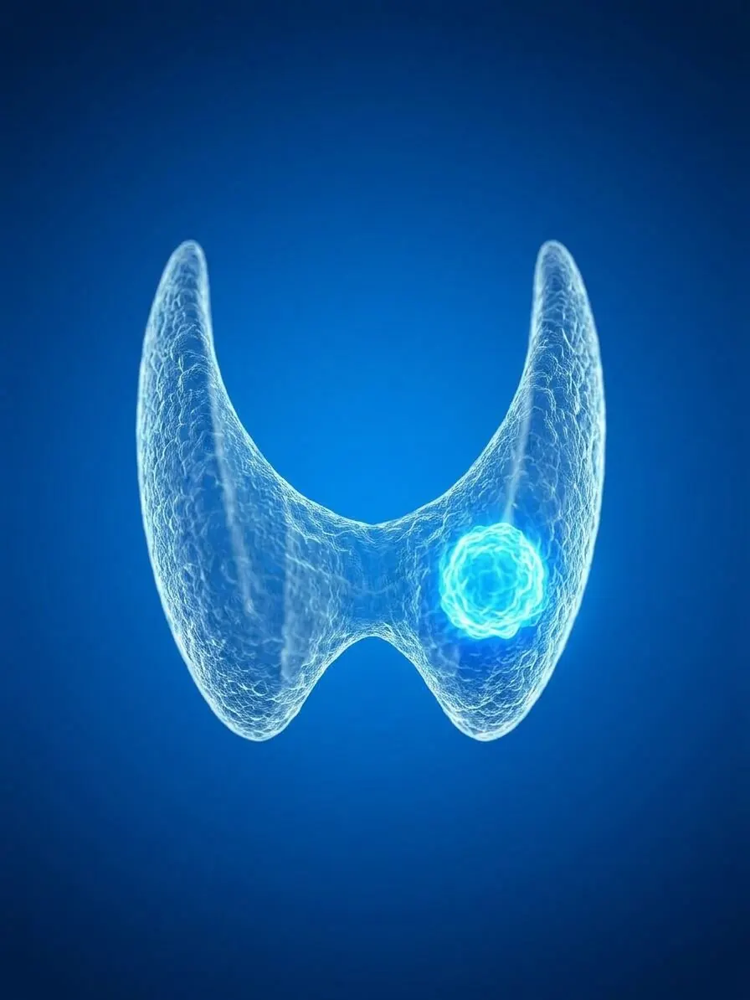
Planejamento cirúrgico
Nódulos com marcadores prognósticos negativos podem ser elegíveis a cirurgias de menor porte, como a cirurgia parcial, que pode preservar parte do funcionamento tireoideano.
Não precisa de nova punção (PAAF)
Utilizamos a mesma amostra já coletada.
Medicina de precisão,
e personalização no tratamento
Painel tumoral para seleção de drogas-alvo em câncer de tireoide avançado
Terapias-alvo consistem em medicamentos racionalmente desenhados para atuarem vias de sinalização específicas que podem estar alteradas por mutações (DNA) ou por fusões (RNA) somáticas diretamente no tumor.
Indicação:
Tumores avançados e/ou metastáticos de Tireoide, normalmente resistentes/refratários à radioiodoterapia.
Verifique a possibilidade de participar de programas gratuitos ou subsidiados de testagem molecularpara terapias-alvo
O teste analisa mutações (DNA), e também, fusões (RNA) em 52 genes-alvo (”drogáveis”), incluindo todas as alterações moleculares para seleção de drogas-alvo em Câncer de Tireoide Avançado (genes BRAF, NTRK e RET).
Inclui avaliação da mutação V804L/M do gene RET, dificilmente encontrada em outros testes no mercado.
Apresenta um laudo descomplicado, com a indicação de quais drogas-alvos e relacionam com as alterações moleculares encontradas.
Terapias-alvo disponíveis para Câncer de Tireoide Avançado
Tipo de Câncer de Tireoide Avançado
*Alteração molecular
Papilífero
Papilífero/Medular
Papilífero
Terapias-alvo disponíveis
(Tafinlar)Trametinibe
(Mekinist)
(RETevmo)Pralsetinibe
(Gavreto)
(Vitraki)Entrectinibe
(Rozlytrek)
Atenção:
Este exame NÃO é indicado para investigação de Carcinoma Medular Familiar/hereditário ou síndromeMEN2A, pois faz análise de material somático (do tumor). Para investigação de Carcinoma Medular Familiar/hereditário ou síndrome MEN2A causados por mutações no proto-oncogene RET é necessário análise de material germinativo, como por exemplo, raspado bucal por swab.
Ciência de Ponta
com Garantia de Excelência
Nossa missão de impactar vidas é sustentada por dois pilares: a busca constante por novas descobertas científicas e o cumprimento dos mais rígidos padrões nacionais e internacionais de qualidade. Conheça nossas publicações e as diretrizes que garantem a excelência dos nossos serviços.
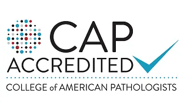
Somos acreditados pelo CAP
(College of American Pathologist), com reconhecimento internacional das normas de qualidade, processo e confiabilidade dos resultados.
No teste de proficiência BRAF Survey no CAP
Obtivemos 100% de aprovação em nossos resultados. Certificado 2024
Histórico de satisfação
Possuímos histórico de satisfação comprovada através do NPS usado para avaliar toda nossa jornada do paciente.
NPS Onkos+95
Legislações seguidas pela Onkos
RDC 978/2025 (ANVISA)Requisitos para o funcionamento de laboratórios clínicos e postos de coleta. Substitui a RDC 786/2023.
RDC 302/2005 (ANVISA)Regulamento técnico para laboratórios clínicos, referência histórica e complementar.
RDC 36/2015 (ANVISA)Boas práticas e segurança do paciente em serviços de saúde.
RDC 11/2012 (ANVISA)Funcionamento de serviços que manipulam material biológico humano.
RDC 23/2011 e RDC 27/2012Boas práticas de fabricação e controle de produtos para diagnóstico in vitro.
LGPD (Lei nº 13.709/2018)Lei Geral de Proteção de Dados, incluindo dados de saúde.
Normas Regulamentadoras NR-1, NR-4, NR-5, NR-6, NR-7, NR-9, NR-17, NR-23, NR-24,NR-26, NR-28, NR-32.Segurança e saúde no trabalho em serviços de saúde.
OMS – Biossegurança (WHO)Diretrizes globais de biossegurança em laboratórios clínicos.
Principais publicações sobre o mir-THYpe
Transformamos incerteza
em decisão
A Onkos é uma deep tech especializada em biologia molecular e inteligência artificial aplicadas à oncologia, desenvolvendo tecnologias proprietárias que transformam conhecimento científico em decisões clínicas mais seguras.
Há mais de uma década impactando
vidas por meio da ciência
Desde 2015, a Onkos desenvolve tecnologias proprietárias que unem biologia molecular e inteligência artificial para reduzir a incerteza diagnóstica e apoiar decisões clínicas em oncologia.
Mais do que realizar exames, desenvolvemos ferramentas que ajudam médicos a tomar decisões com mais clareza e confiança, e pacientes a seguirem sua jornada com mais segurança.
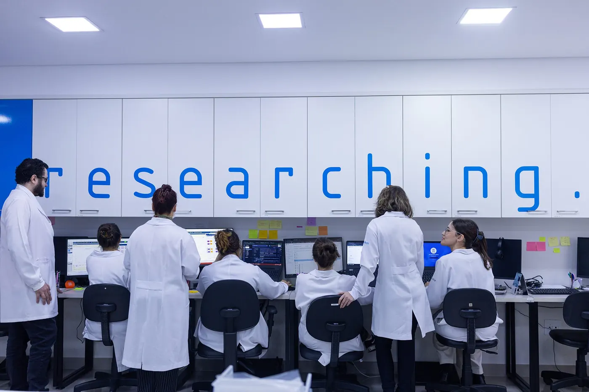
O que nos move
Não acreditamos que toda decisão difícil precise ser tomada com informação limitada.
Por isso desenvolvemos tecnologias capazes de transformar dados complexos em informações clínicas relevantes.
Porque decisões melhores começam com mais conhecimento.
O diagnóstico molecular está transformando a oncologia
Nosso papel é acelerar essa evolução por meio de tecnologias capazes de apoiar decisões clínicas individualizadas, baseadas em biologia molecular e tecnologia.
Pessoas em
primeiro lugar
Toda tecnologia que desenvolvemos existe para impactar vidas.
Ciência
com propósito
Transformamos conhecimento em benefício real para pacientes e médicos.
Clareza que
gera confiança
Acreditamos que decisões melhores começam com mais informação.
Nossa evolução
contínua
A curiosidade científica é o motor da nossa inovação.
Confira as últimas notícias
da Onkos na mídia.
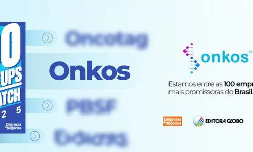
Com biologia molecular e IA, Onkos figura pela quinta vez na lista das 100 Startups to Watch
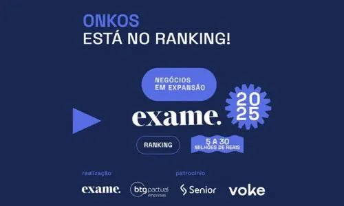
Onkos no Ranking da Exame: como nosso crescimento ajuda pacientes a evitar cirurgias desnecessárias
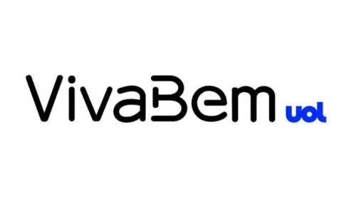
Tireoide: tecnologia brasileira reduz até 75% de cirurgias desnecessárias
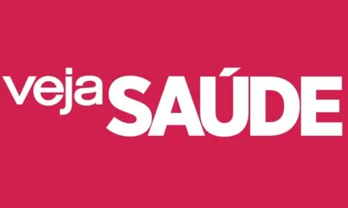
Exames genéticos podem evitar cirurgias de tireoide?
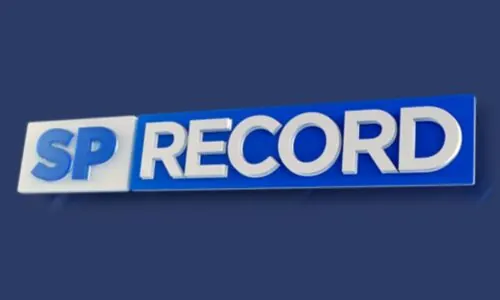
Ciência SP | Teste molecular para nódulos da tireoide
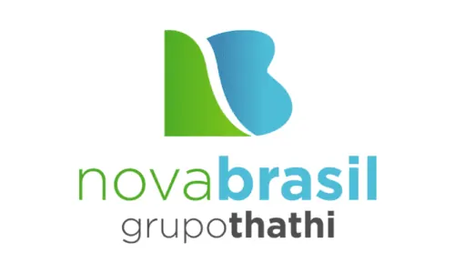
Tecnologia para diagnóstico de tumor de tireoide
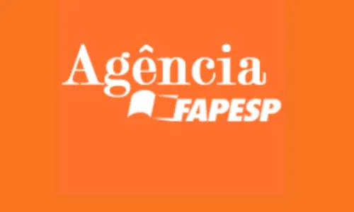
Teste para diagnosticar tumores de tireoide ganha Prêmio Octavio Frias de Oliveira
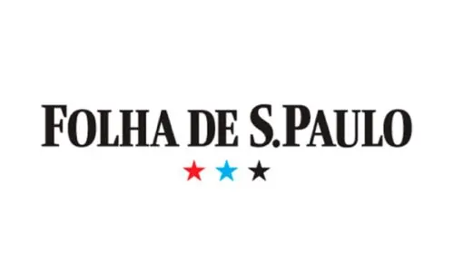
Prêmio Octavio Frias de Oliveira anuncia vencedores
Teste para nódulo na tireoide ganha Prêmio Octavio Frias de Oliveira
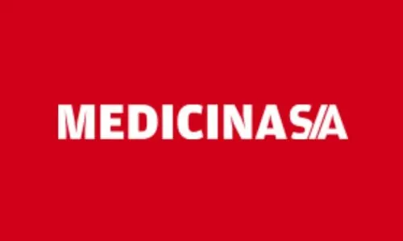
Estudo aponta redução de até 75% de cirurgias em nódulos de tireoide
CONFIRA OS ARTIGOS DO NOSSO BLOG
Como podemos
ajudar você?
Tem dúvidas sobre testes moleculares,
resultados ou parceiros Onkos?
Entre em contato com nossa equipe especializada.